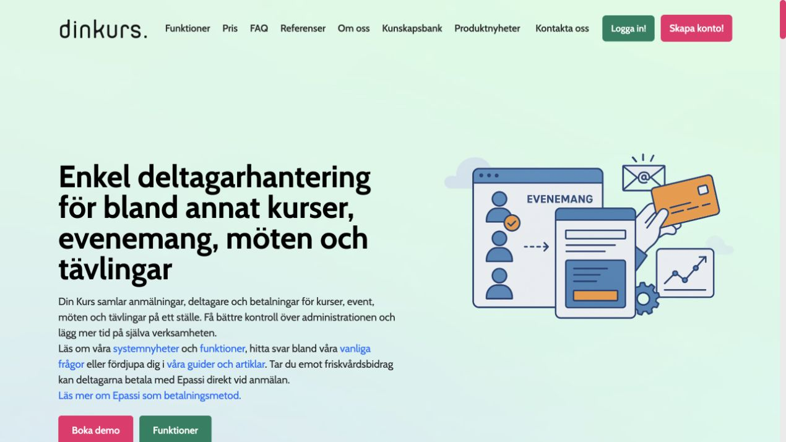

The entry point
The captured page establishes the service before presenting the next step.
An event and participant-management website with product explanation, feature discovery, and demonstration calls to action.

Website design + HTML / WordPress
2 curated images
Product explanation
Live-site capture
An event and participant-management website with product explanation, feature discovery, and demonstration calls to action.
Current-site reference captures. The live site may have changed since the originally credited work.
Visit the reference site ↗Tap any image to explore the original in detail.
A retrospective design analysis based on the preserved screens.
The captured page establishes the service before presenting the next step.
Navigation and supporting sections provide routes into more detailed content.
These captures document the current live site. Later changes may differ from the originally credited work.
A newly reconstructed wireframe study showing the hierarchy and content groups visible in the finished work.
Created for this portfolio from the final designs. This is a retrospective reconstruction, not evidence of original research, testing, or wireframing.
Want to talk about a project, a role, or a redesign? Get in touch.
Get in touch ↗jaynishad2010@gmail.com ↗